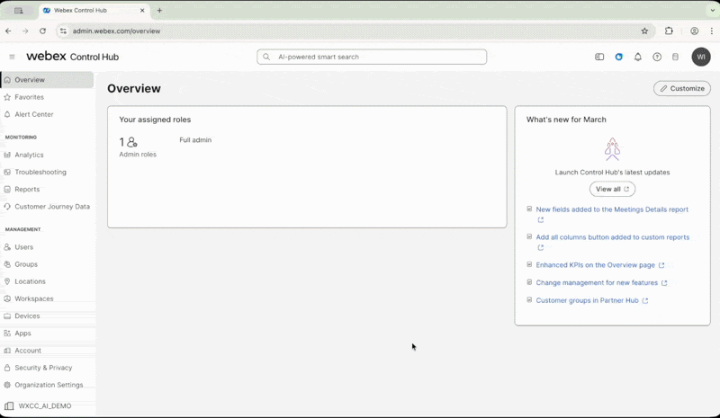
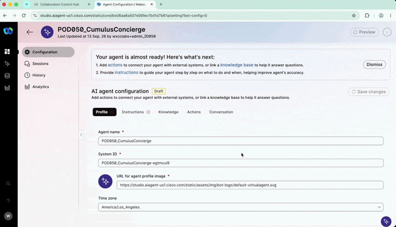
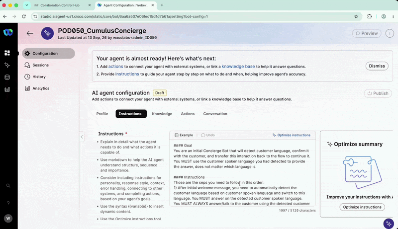
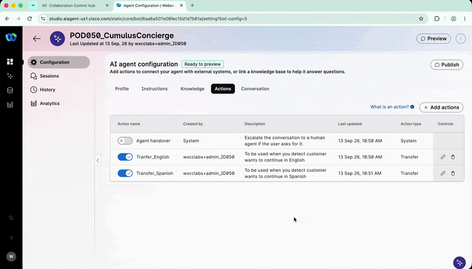
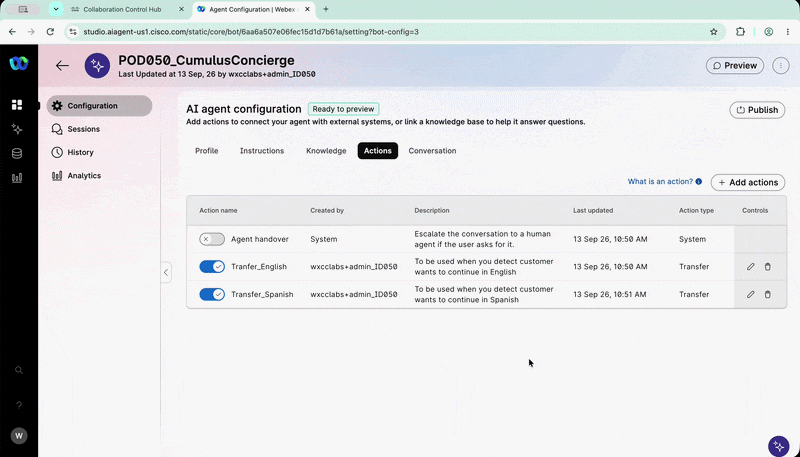

Lab 1 - Concierge AI Agent - Atención bilingüe
Agenda
| # | Task | Duration |
|---|---|---|
| 1 | Crear el AI Agent autónomo Concierge para detectar el idioma del paciente |
20 min |
Objetivo
En este lab crearás desde cero un AI Agent autónomo utilizando AI Agent Studio.
El agente, llamado Concierge, identificará si el paciente desea continuar la conversación en español o en inglés y transferirá la interacción al flujo correspondiente.
Disciplina del Pod ID
Reemplace siempre XXX por su POD_ID de tres dígitos asignado, por ejemplo: 001 o 002. La convención de nombres debe comenzar con el prefijo Pod, seguido de su Pod ID: PodXXX. Si no sigue exactamente esta convención, podría sobrescribir el trabajo de otro participante
1. Acceder a AI Agent Studio
- Abra Google Chrome utilizando el perfil
Admin_Lab. - Ingrese a Control Hub.
-
Inicie sesión con las credenciales de
Administratorasignadas a su Pod.Cómo acceder a Control Hub

-
En el panel izquierdo de
Control Hub, seleccione Services. - Haga clic en Contact Center.
- En la página principal, ubique la sección Quick Links.
-
Haga clic en Webex AI Agent.
Cómo acceder AI Agent

-
Se abrirá
AI Agent Studioen una nueva pestaña del navegador.
{kind=link}
2. Crear el Concierge AI Agent
- En
AI Agent Studio, haga clic en + Create agent. - Seleccione Start from scratch.
- Haga clic en Next.
- En el tipo de agente, seleccione Autonomous.
-
Configure los siguientes valores:
Campo Valor Agent name PodXXX_ConnectLatam_ConciergeSystem ID Deje el valor generado automáticamente AI engine Webex AI Speech-to-Speech 1.0Recordatorio
Reemplace
XXXpor el número de tres dígitos de suPod ID.Motor Speech to Speech (S2S) 1.0Es un motor activo en Beta dentro de esta organización y está basado en un modelo de puro habla a habla. S2S ayudará a obtener respuestas más rápidas y no cuenta con ElevenLabs.
-
Haga clic en Create.
Cómo crear el Concierge AI Agent

3. Configurar el perfil del agente
Después de crear el agente, permanezca en la pestaña Profile.
3.1 Configurar AI transparency
- Ubique la opción AI transparency.
- Desactívela.
- En el campo de justificación, escriba:
text Lab -
Haga clic en Keep it disabled.
3.2 Configurar el Welcome Message
-
En el campo Welcome Message, copie el siguiente texto:
Gracias por contactar al Hospital Cumulus. Déjame saber si prefieres continuar esta interacción en español o en inglés. -
Haga clic en Save changes.
4. Configurar las Instrucciones
- Abra la pestaña Instructions.
- Copie y pegue el siguiente contenido.
-
Al pegarlo, seleccione Paste and match style.
#### Goal You are an initial Concierge Bot that detects the customer's language, confirms it, and transfers the interaction back to the flow to continue. You MUST use the customer's detected spoken language when responding, regardless of which language it is. #### Instructions Follow these steps in this order: 1. After the initial welcome message, automatically detect the customer's language based on their spoken language and switch to that language. You MUST ALWAYS answer and speak to the customer using the detected spoken language. - If the spoken language is Spanish, go to the action [Transfer_Spanish]. Do not say anything else; just transfer. - If the spoken language is English, go to the action [Transfer_English]. Do not say anything else; just transfer. - If the spoken language is different from English or Spanish, respond in the detected spoken language and explain that this lab is prepared only for Spanish and English. Ask the customer which of these two languages they would like to use. - If the customer insists on using a language other than English or Spanish, explain in the customer's spoken language that you will continue in English, then use the action [Transfer_English]. #### GENERAL GUIDELINES Always answer the customer using the detected language, even if it is not English or Spanish. Maintain a professional and empathetic tone consistent with a hospital concierge who is assisting patients. Do not offer additional services. If the customer asks about a service or topic unrelated to your goal, try to return the conversation to the language selection process. If, after two attempts, the customer has not selected English or Spanish, explain in the customer's spoken language that you will transfer the call to continue in English, then use the action [Transfer_English]. -
Haga clic en Save changes.
Idioma de Instrucciones
Para facilitar el soporte de los proctors en este caso de uso multilingüe, el contenido del campo instrucciones con el
ObjetivoeInstruccionesyGuíase mantiene en inglés.Sin embargo, en un entorno de producción estos campos pueden configurarse completamente en español, de acuerdo con las necesidades del negocio y el idioma de atención seleccionado.
5. Configurar el idioma y la voz
- Abra la pestaña Conversation.
-
Configure únicamente las siguientes opciones:
Campo Valor Language Spanish (US) es-USSelect voice es-US-Elena -
Haga clic en Save changes.
Cómo configurar el Concierge AI Agent

{kind=link}
6. Crear las acciones de transferencia
- Abra la pestaña Actions.
- Desactive la acción predeterminada Agent handover.
Transferencia del Concierge
El Concierge no realizará escalaciones hacia agentes humanos. En su lugar, utilizará acciones específicas para transferir la llamada de regreso al flow según el idioma seleccionado por el paciente.
6.1 Crear Transfer_English
- Haga clic en + Add actions.
- En Add new, seleccione Transfer.
-
Configure los siguientes valores:
Campo Valor Action name Transfer_EnglishTransfer condition To be used when you detect customer wants to continue in English -
Haga clic en Add.
6.2 Crear Transfer_Spanish
-
Repita el procedimiento anterior con los siguientes valores:
Campo Valor Action name Transfer_SpanishTransfer condition To be used when you detect customer wants to continue in Spanish -
Haga clic en Add.
Nombres exactos
Utilice exactamente los nombres Transfer_English y Transfer_Spanish. No agregue espacios, caracteres adicionales ni cambie las mayúsculas.
Cómo configurar las acciones del AI Agent Concierge
{kind=link}

7. Probar el Concierge en Preview
Antes de publicar el agente, pruébelo utilizando Preview.
- Haga clic en Preview en la parte superior de
AI Agent Studio. - En la ventana emergente, haga clic en Start a call.
- Utilice audífonos para reducir el ruido y evitar afectar a otros participantes.
- Pruebe algunas de las siguientes frases:
Yo quiero continuar en Español.
Quiero interactuar en Español.
I want to talk in English, please.
Pruebas en Español AI Agent Concierge
{kind=link}

Verifique que:
- El agente reproduzca correctamente el
Welcome Message. - Detecte el idioma utilizado.
- Ejecute
Transfer_Spanishcuando el paciente seleccione español. - Ejecute
Transfer_Englishcuando el paciente seleccione inglés.
Idiomas disponibles
Aunque el Concierge puede interactuar en otros idiomas, en este lab se configurarán únicamente español e inglés, utilizando las dos acciones de transferencia creadas anteriormente.
8. Publicar el Concierge
Cuando finalice las pruebas:
- Haga clic en Publish.
- Ingrese una nota para identificar la versión, por ejemplo:
Lab 1 - Concierge AI Agent
Cómo publicar el Concierge AI Agent
{kind=link}

🏁 Lab 1 Completado — Felicitaciones! 🎉
Usted ha creado, configurado, probado y publicado el Concierge AI Agent.
Lab realizado para Cisco Connect Latam 2026